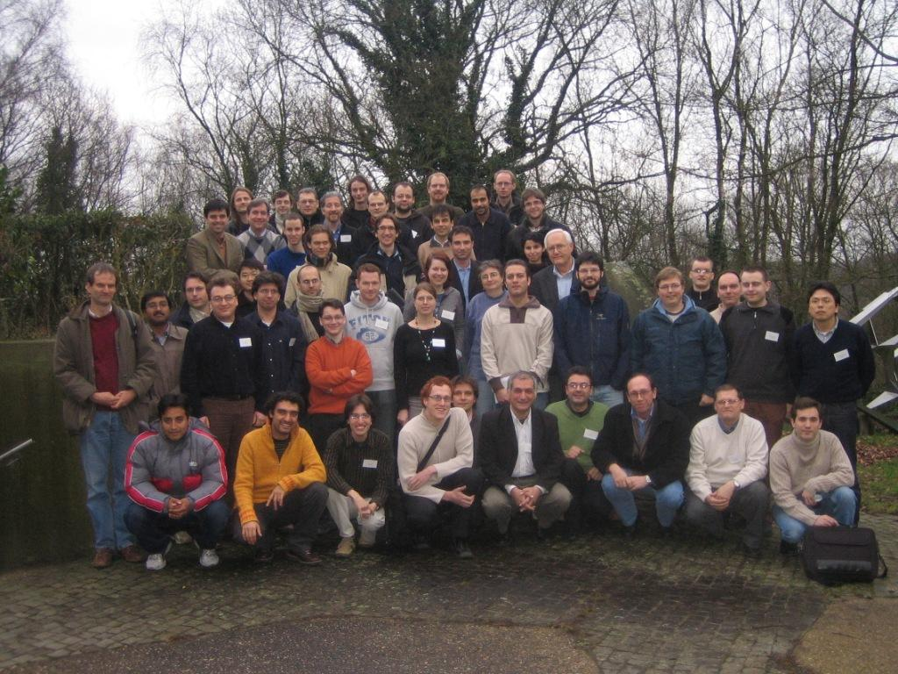
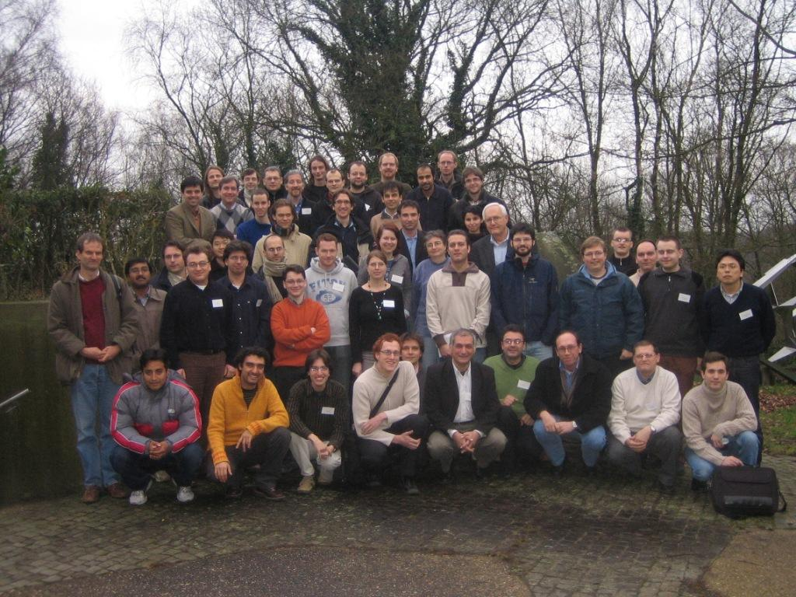
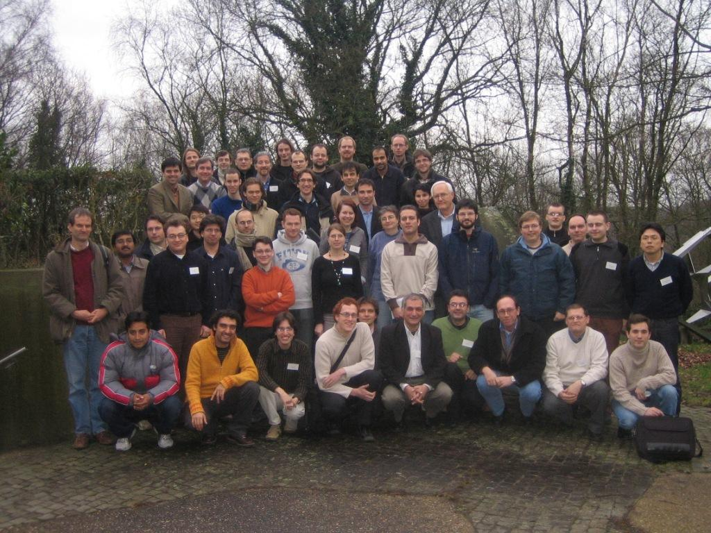

Conference picture : chose your favorite developer !

Pictures of the events ! Talks - Beer & Cheese Party - Dinner
T. Deutsch + file Helping robustness of ABINIT code: Interfaces and abilint [12+5]
S. Pesant Graphical interface for the creation of input files for Abinit [20+10]
S. Goedecker Efficient parallelization of multiple 3-dim FFT's [20+10]
F. Bottin Band FFT parallelisation of Abinit [20+10]
T. Hoefler Optimization of a parallel 3D-FFT with non-blocking collective operations [20+10]
P. Plaenitz Enhancing Parallelizing Capabilities of ABINIT [20+10]
V. Olevano Specifications for the Nanoquanta-ETSF NetCDF file format [20+10]
D. Caliste ETSF_IO, a new library to access electronic structure calculation files [15+5]
F. Jollet Implementation of PAW in ABINIT and PAW atomic data file generation [20+10]
M. Torrent Implementation of the linear response in PAW [20+10]
B. Amadon LDA+U method in PAW [15+5]
S. Mazevet Electrical conductivity calculations within the PAW formalism [15+5]
P.M. Anglade SCF Preconditioners within Abinit [20+10]
M. Torrent Several aspects of the SC cycle mixing in Abinit [20+10]
D. Caliste & L. Genovese Introducing wavelet basis sets inside ABINIT via the BigDFT project [25+10]
D. Sangalli Implementation and applications
of Casida TDDFT approach
to electronic excitations, for spin-polarized collinear systems [10+5]
R. Caracas Elastic and spectroscopic properties of Earth and planetary materials [15+5]
P. Hermet First-principles modelling of experimental phonon spectra [15+5]
J. Battacharjee Bonding and polarization analysis using localized orbitals [20+10]
F. Bruneval Self-Consistent GW Electronic Structure of Solids [20+10]
R. Shaltaf Speeding up the GW code : Parallelism + PPM models [20+10]
M. Giantomassi The GW code of ABINIT: present status, new features and future developments [20+10]